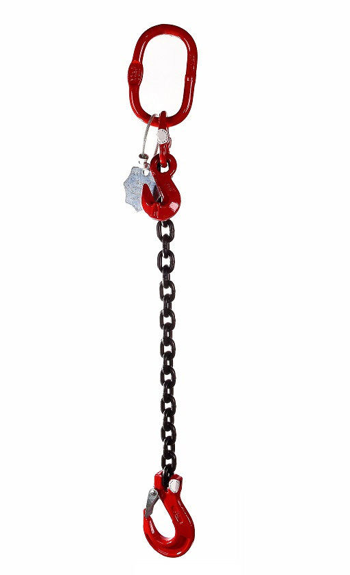
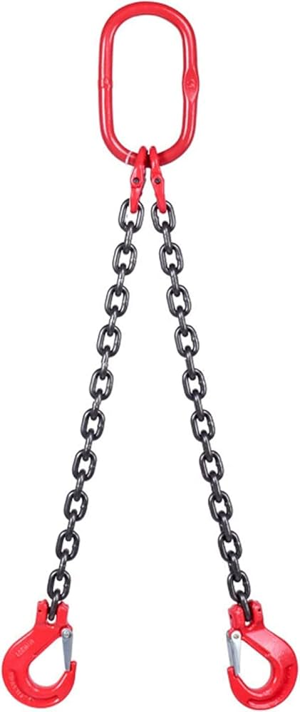
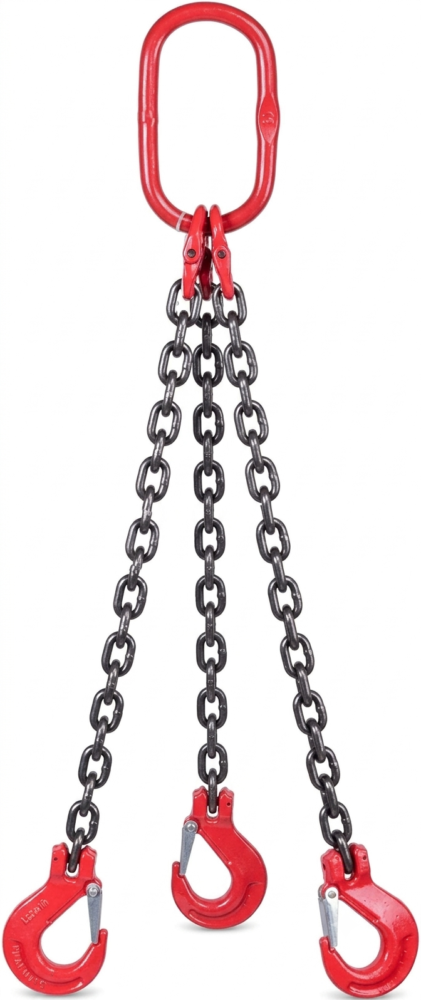
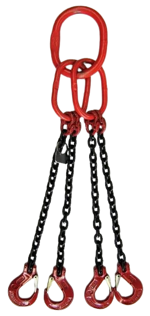

Heavy-Duty Alloy Chain Slings for Safe Industrial Lifting & Rigging
L.R. Engineering Works manufactures and supplies premium industrial Alloy Chain Slings engineered for heavy-duty material handling, hoisting, and rigging applications. Built for superior strength, durability, and rugged resilience, our chain slings perform exceptionally well in harsh industrial environments where repetitive lifting, abrasive conditions, and high structural integrity are required.
Widely deployed across foundries, steel mills, heavy machine shops, manufacturing units, and construction projects, alloy chain slings provide unmatched reliability for handling heavy, bulky, and hot loads. Their modular assembly allows for easy inspection, testing, and component maintainability. Resistant to oil, grease, dirt, and extreme operational conditions, our chain slings deliver dependable lifting safety across critical industrial sectors.
Engineered characteristics that make alloy chain slings ideal for critical industrial lifting:
Versatile sling configurations available to match your specific lifting and rigging requirements:
Overview of industrial chain grades and their recommended applications.
Grade 30 and 40 chain is sold at many hardware stores and is commonly used for general-purpose applications such as barricading parking lots.
Grade 70 transport chains are commonly used by trucking and transportation companies as tie-down chains for securing loads.
Grade 80, 100 & 120 chains are suitable for lifting applications. The metal used in Grade 80, 100 and 120 grade rigging slings is designed to stretch and elongate. Among these grades, Grade 80 is the most common grade of alloy lifting chain used for lifting loads.
High-performance alloy chain slings precision-assembled for heavy-duty industrial lifting and rigging.




Find quick answers to common technical queries regarding alloy chain slings, safe lifting capacities, and inspection guidelines.